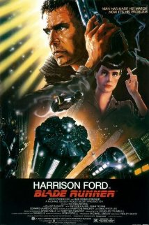

- Blade Runner
Description:A blade runner must pursue and try to terminate four replicants who stole a ship in space and have returned to Earth to find their creator.
 - Star Wars
Description:Luke Skywalker joins forces with a Jedi Knight, a cocky pilot, a wookiee and two droids to save the universe from the Empire's world-destroying battle-station, while also attempting to rescue Princess Leia from the evil Darth Vader.

- Star Wars: Episode V - The Empire Strikes Back
Description:After the rebels have been brutally overpowered by the Empire on their newly established base, Luke Skywalker takes advanced Jedi training with Master Yoda, while his friends are pursued by Darth Vader as part of his plan to capture Luke.

- Star Wars: Epsiode VI - Return of the Jedi
Description:After rescuing Han Solo from the palace of Jabba the Hutt, the rebels attempt to destroy the second Death Star, while Luke struggles to make Vader return from the dark side of the Force.

- The Matrix
Description:A computer hacker learns from mysterious rebels about the true nature of his reality and his role in the war against its controllers.